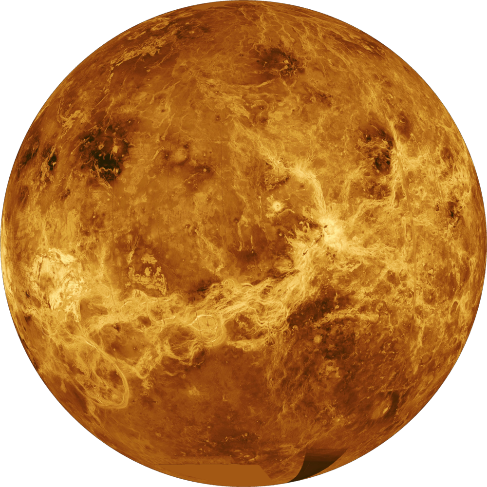
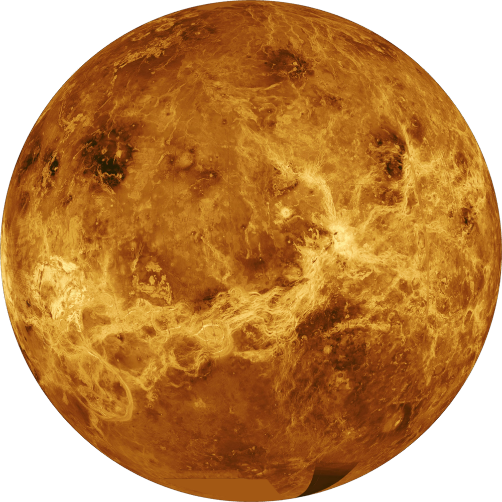
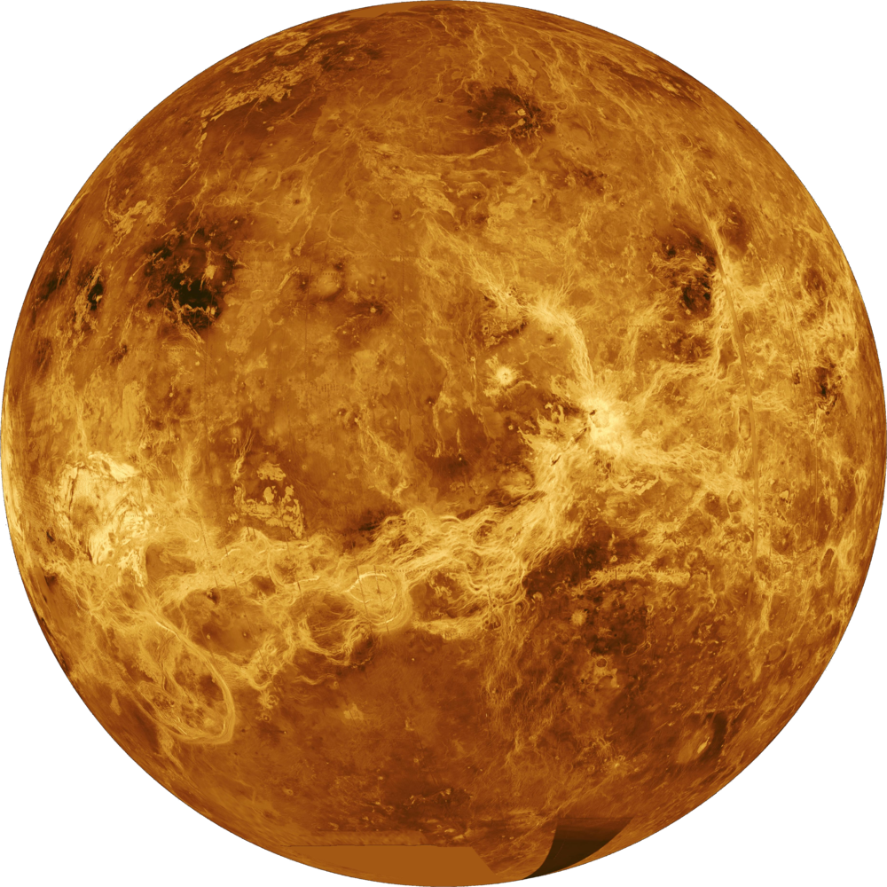
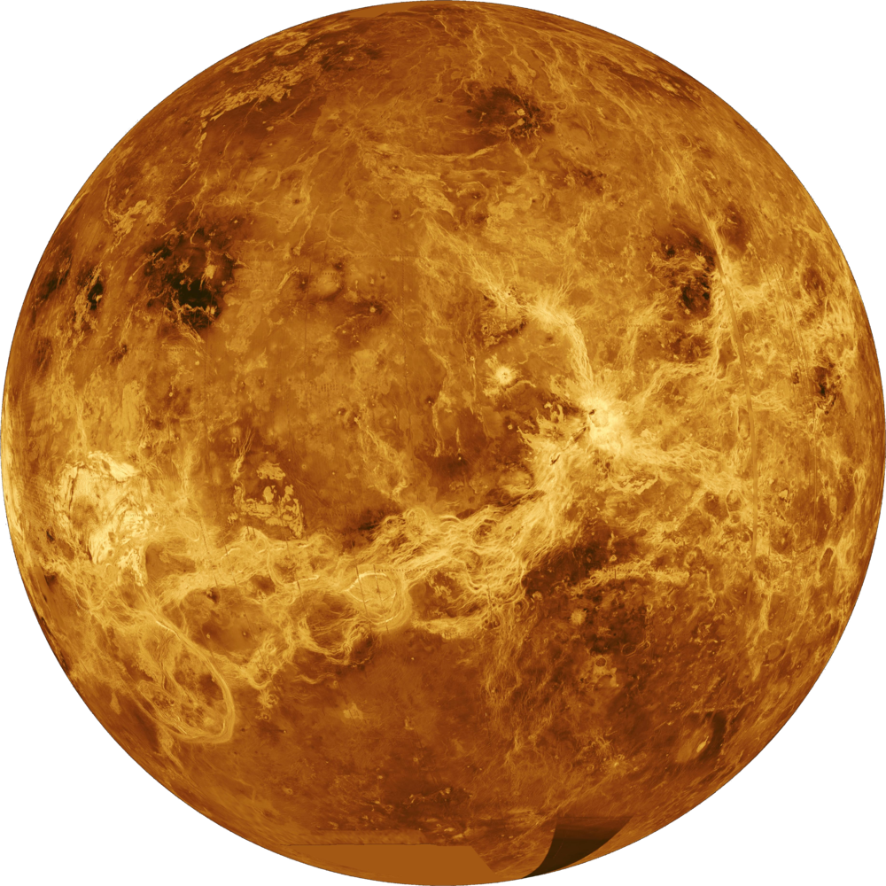

Unveiling the Universe


 



Our website is dedicated to promoting space exploration and inspiring a sense of wonder and curiosity about the universe. From the majestic beauty of nebulae to the mysterious depths of black holes, we aim to showcase the incredible and diverse phenomena that exist beyond our world. Our content is designed to be informative and engaging, offering insights into the latest scientific discoveries, as well as a glimpse into the rich history of space exploration. We believe that by fostering a deeper appreciation and understanding of the cosmos, we can inspire the next generation of space enthusiasts and contribute to the ongoing exploration and discovery of the universe.
At our website, we strive to provide a comprehensive resource for anyone interested in space, whether you are a seasoned astronomer or a curious beginner. We offer a variety of multimedia content, including stunning images, informative articles, and engaging videos, to cater to different learning styles and interests. Our team of experts is passionate about space and dedicated to delivering accurate and up-to-date information, ensuring that our visitors have access to the latest news and insights from the world of space exploration.
In addition to promoting space exploration, our website also serves as a platform for connecting space enthusiasts from all around the world. We provide a space for like-minded individuals to share their thoughts and experiences, exchange ideas and information, and connect with others who share their passion for space. We believe that by fostering a community of space enthusiasts, we can inspire collaboration and innovation in the field of space exploration and contribute to the advancement of human knowledge and understanding of the universe.
Ultimately, our website is a celebration of the beauty and wonder of the cosmos. Through our content and community, we hope to ignite a sense of curiosity and awe about the universe, and inspire individuals to learn more about the mysteries of space and the potential for exploration and discovery. Whether you are a casual observer or a dedicated enthusiast, we invite you to join us on our journey through the cosmos and explore the wonders of the universe together.